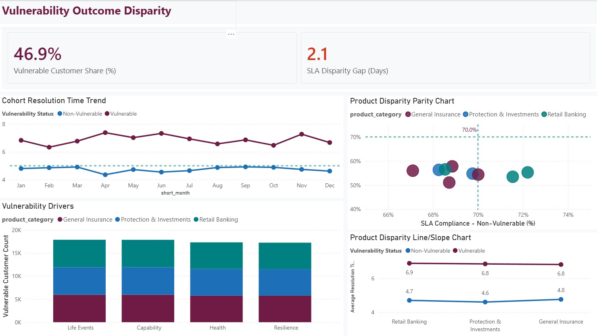

FCA Consumer Duty Outcome Monitoring Platform
An end-to-end regulatory analytics platform for UK retail financial services, built to evidence customer outcomes across four statutory areas defined by FCA PS22/9: Products & Services, Price & Value, Consumer Support, and Vulnerable Customer Outcome Disparity.
50,000
Customer profiles and 75,000 policy records benchmarked against official FCA General Insurance Value Measures and FOS ombudsman uphold rates.
- Automated SQLite data engineering pipeline structuring raw staging tables into an optimized 4-fact, 5-dimension Star Schema.
- Built a 4-page Power BI executive suite designed with an official FCA Claret theme (`#701B45`) and verified DAX measures for SLA compliance, loss ratios, and vulnerability gap tracking.
- Validated through an 8-test automated pytest suite asserting referential integrity, regional distributions, and conduct risk thresholds.